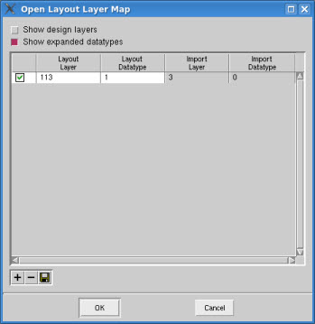

You can generate
a layer map file from scratch that is suitable for opening the layout.
Procedure
- From the top-level menu, choose .
- Click the Options tab.
- Click the Review
Layers button.
This displays the Open Layout
Layer Map dialog box.
- Click the “+” button to create
an editable layer map entry.
- Continue to click the same
button to add the desired number of entries.
Each entry has a check box,
Layout Layer, Layout Datatype, Import Layer, and Import Datatype
fields. When adding new layers, the check box should always remain
enabled.
- If your source layout file
does not contain datatypes, or the layout file has datatypes but
you want them to be ignored when the layout is loaded, disable the “Show
expanded datatypes” check box. This disables all fields in the Import
Datatype column.
- For each layer map entry:
Type in a layer and datatype
pair found in your source layout file.
Type in the layout layer
number that you want the import layer and datatype to map to when
you load your source layout file into the viewer.
For example, if your source
layout file contains data on layer 3, datatype 1, and you want this
data to be displayed on layer 113 in the viewer, you enter ‘113’
into the Layout Layer field, ‘3’ into the Import Layer field, and
‘1’ into the Import Datatype field as shown in Figure 1.
Figure 1. Open Layout Layer
Map Dialog Box
- To remove an unwanted layer
map entry, click in one of the fields of that entry and then click
the “-” button. The entry is removed from the list.
- To sort the entries within
a column in ascending or descending order, click the desired column
heading.
For example, clicking on the
Layout Layers column heading sorts the entries in this column in
ascending and descending order. The same action applies to the Import
Layer and Import Datatype labels.
- When all entries are filled
out, save the layer map to a file by clicking on the “disk” button.
This displays the Save Map
to a File dialog box.
- Type a file pathname in the
File name text box.
- Click OK to
save the layer map to the file.
Results
Notice that the file you specified
is now shown in the Layer Map File field. If you now intend to load
a layout file and you want to use your new layer map file, activate
the check box next to the layer map field.